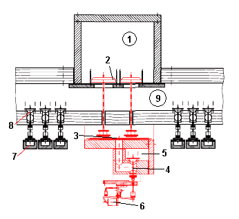

Stejně jako tónové ventily i systém registrace ve vzdušnici může být ovládán kombinovaně. V takovém případě hovoříme o smíšené rejstříkové traktuře. Princip funkce obou traktur (hrací i rejstříkové) je velmi podobný. Nejčastější kombinací je použití elektropneumatické traktury. Filosofie je shodná, jako u tónové traktury - ovládaní od hracího stolu je elektrické, pod vzdušnicí je elektropneumatické relé, které převede elektrický signál na pneumatický a ten ovládá registraci stlačeným vzduchem (vzhledem k větším rozměrům rejstříkových ventilů či síle, nutné k přesouvání zásuvek se používají téměř výhradně větší klínové míšky). Na následujících obrázcích je řez kuželkovou vzdušnicí ve dvou různých uspořádáních rejstříkové ventilové komory ve vzduchovodu (na prvním je komora pod vzdušnicí, na druhém nad ní). Elektropneumatická rejtříková traktura je na nich zvýrazněna červeně: |
Funkce traktury je obdobná jako u tónové. Ve vzduchovodu
(ventilové komoře 1) je klapkový rejstříkový ventil (2), udržovaný v klidové,
zavřené poloze pružinou (3). Ventil je spojen tahacím drátem (4) s horní
deskou výpustného (vyprázdňovaného) míšku (5). Míšek je propojen s prostorem
ventilové komory ventilem s kontraventilem, jehož kuželka (6) je nadzdvihávána
páčkou elektromagnetu (7). Při sepnutí elektromagnetu tento ventil vypustí
vzduch z míšku, ten splaskne, otevře klapkový ventil (2) a vpustí vzduch
z ventilové komory do rejstříkové kancely (10). Pozice (8) nákresu představuje
kondukt s míšky a kuželkami (9) jednotlivých tónů. |

Obdobné je i uspořádání na tomto nákresu. Ve vzduchovodu
(ventilové komoře 1) jsou kuželkové ventily (2). Ty leží na horní desce
míšku (3), do něhož je vzduch vpouštěn ventilem 4 z pomocného vzduchového
kanálku 5 (relé). Tento ventil je otevírán páčkou elektromagnetu (6).
Po jeho sepnutí se vpustí vzduch do míšku, ten se nadme a nadzvedne kuželky
(2) a otevře tak přívod vzduchu z ventilové komory (1) do rejstříkové
kancely (9). Pozice (7) je opět kondukt s míšky a (8) kuželka tónového
ventilu ve vzdušnici. |
Další běžnou kombinací traktur je elektromechanická
rejstříková traktura. K mechanické traktuře registrace je v některém
bodě připojeno přídavné elektromagnetické ovládání (nejčastěji pomocí
tažných elektromagnetů). Registraci je tak možno ovládat jak mechanicky
(vytažením manubria na hracím stole) nebo elektricky (sklopkou např. na
druhém, vzdáleném stole nebo pomocí logiky volných kombinací a kolektivů,
crescenda či registračního počítače viz. např. varhany u sv.
Ducha v Opavě). |
Jak při ručním, tak i při elektromagnetickém ovládání je v pohybu celá traktura, díky posunu manubrií na hracím stole a jejich výsledné poloze má varhaník stále přehled o aktuální registraci v té nejnázornější podobě (obdobně jako u "Setzer" sklopek v elektrické traktuře registrace). Výhodou tohoto řešení je volitelná nezávislost obou systémů registrace (buď lze registrovat současně ručně i elektromagneticky - např. k navolené volné kombinaci přidat při hře další rejstřík ručně nebo jsou volné kombinace ručnímu ovládání nadřazeny). Lze jej většinou dostavět i i do starších varhan bez nutnosti velkých a nevratných zásahů do traktury (památkové hledisko zachování starých nástrojů v pokud možno nejpůvodnějším stavu) a vybavit je tak chybějícími pomocnými zařízeními (u varhan se zásuvkovou vzdušnicí a mechanickou rejstříkovou trakturou většinou chybí kombinace i kolektivy, čistě mechanickou cestou bez doplnění o pneumatické či elektromagnetické ovládání je nelze realizovat - nejde jedním ovládacím prvkem najednou mechanicky přestavit celou řadu zásuvek). Další výhodou je zachování plné funkčnosti registrace (a tím i varhan jako celku) i když elektromagnetické ovládání nebude či nemůže být použito (důvodů může být celá řada - výpadek napájecí sítě, porucha registračního počítače nebo varhaník nechce používat elektroniku a registruje raději ručně). |
Na souvisejících stránkách jsou popsány nejčastěji
používané komponenty kombinované
traktury, tónová traktura. |
Poznámka: Tato stránka je součástí Anatomie varhan ®, © Ing. Petr Bernat. Všechny animace © Konrad Zacharski